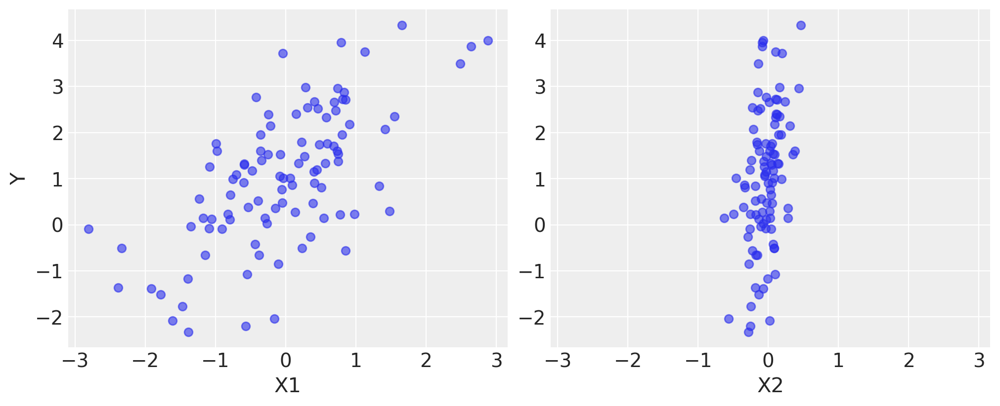
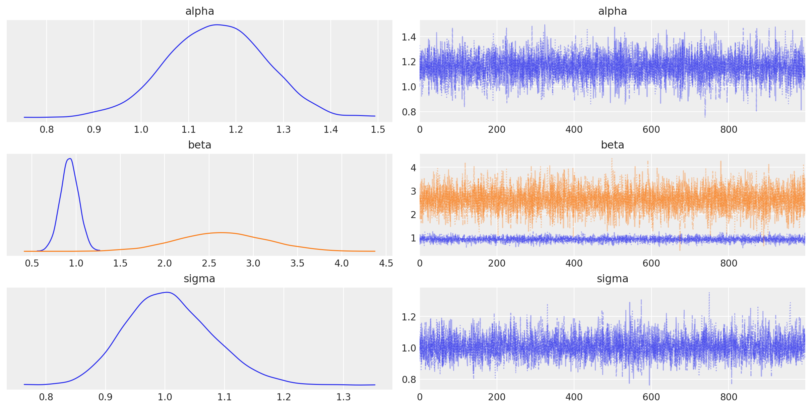

import arviz as az
import pandas as pd
import matplotlib.pyplot as plt
import numpy as np
import sqlalchemy as saPyMC set-up
Walk through as per the installation instructions https://www.pymc.io/projects/docs/en/latest/learn/core_notebooks/pymc_overview.html
%config InlineBackend.figure_format = 'retina'
# Initialize random number generator
RANDOM_SEED = 8927
rng = np.random.default_rng(RANDOM_SEED)
az.style.use("arviz-darkgrid")# True parameter values
alpha, sigma = 1, 1
beta = [1, 2.5]
# Size of dataset
size = 100
# Predictor variable
X1 = np.random.randn(size)
X2 = np.random.randn(size) * 0.2
# Simulate outcome variable
Y = alpha + beta[0] * X1 + beta[1] * X2 + rng.normal(size=size) * sigmafig, axes = plt.subplots(1, 2, sharex=True, figsize=(10, 4))
axes[0].scatter(X1, Y, alpha=0.6)
axes[1].scatter(X2, Y, alpha=0.6)
axes[0].set_ylabel("Y")
axes[0].set_xlabel("X1")
axes[1].set_xlabel("X2");
import pymc as pm
print(f"Running on PyMC v{pm.__version__}")Running on PyMC v4.2.2basic_model = pm.Model()
with basic_model:
# Priors for unknown model parameters
alpha = pm.Normal("alpha", mu=0, sigma=10)
beta = pm.Normal("beta", mu=0, sigma=10, shape=2)
sigma = pm.HalfNormal("sigma", sigma=1)
# Expected value of outcome
mu = alpha + beta[0] * X1 + beta[1] * X2
# Likelihood (sampling distribution) of observations
Y_obs = pm.Normal("Y_obs", mu=mu, sigma=sigma, observed=Y)with basic_model:
# draw 1000 posterior samples
idata = pm.sample()Auto-assigning NUTS sampler...
Initializing NUTS using jitter+adapt_diag...
Multiprocess sampling (4 chains in 4 jobs)
NUTS: [alpha, beta, sigma]
100.00% [8000/8000 00:00<00:00 Sampling 4 chains, 0 divergences]
Sampling 4 chains for 1_000 tune and 1_000 draw iterations (4_000 + 4_000 draws total) took 7 seconds.idataarviz.InferenceData
-
<xarray.Dataset> Dimensions: (chain: 4, draw: 1000, beta_dim_0: 2) Coordinates: * chain (chain) int64 0 1 2 3 * draw (draw) int64 0 1 2 3 4 5 6 7 ... 992 993 994 995 996 997 998 999 * beta_dim_0 (beta_dim_0) int64 0 1 Data variables: alpha (chain, draw) float64 1.222 1.061 1.2 ... 1.122 1.139 1.144 beta (chain, draw, beta_dim_0) float64 1.126 3.113 ... 0.9826 3.033 sigma (chain, draw) float64 0.9843 1.059 1.01 ... 0.945 0.9402 0.9509 Attributes: created_at: 2022-10-18T21:29:30.973443 arviz_version: 0.12.1 inference_library: pymc inference_library_version: 4.2.2 sampling_time: 7.077733039855957 tuning_steps: 1000 -
<xarray.Dataset> Dimensions: (chain: 4, draw: 1000, Y_obs_dim_0: 100) Coordinates: * chain (chain) int64 0 1 2 3 * draw (draw) int64 0 1 2 3 4 5 6 7 ... 993 994 995 996 997 998 999 * Y_obs_dim_0 (Y_obs_dim_0) int64 0 1 2 3 4 5 6 7 ... 92 93 94 95 96 97 98 99 Data variables: Y_obs (chain, draw, Y_obs_dim_0) float64 -1.033 -1.48 ... -0.9122 Attributes: created_at: 2022-10-18T21:29:31.095144 arviz_version: 0.12.1 inference_library: pymc inference_library_version: 4.2.2 -
<xarray.Dataset> Dimensions: (chain: 4, draw: 1000) Coordinates: * chain (chain) int64 0 1 2 3 * draw (draw) int64 0 1 2 3 4 5 6 ... 994 995 996 997 998 999 Data variables: (12/16) process_time_diff (chain, draw) float64 0.000211 0.000206 ... 0.000199 step_size_bar (chain, draw) float64 0.9423 0.9423 ... 0.8989 0.8989 perf_counter_start (chain, draw) float64 8.278e+05 8.278e+05 ... 8.278e+05 smallest_eigval (chain, draw) float64 nan nan nan nan ... nan nan nan acceptance_rate (chain, draw) float64 1.0 0.8348 0.9676 ... 1.0 0.6763 step_size (chain, draw) float64 1.028 1.028 ... 0.7739 0.7739 ... ... max_energy_error (chain, draw) float64 -0.5733 0.3052 ... 0.9494 index_in_trajectory (chain, draw) int64 -3 3 3 -3 -3 1 ... -3 1 2 -1 1 -2 lp (chain, draw) float64 -153.8 -155.0 ... -151.7 -151.7 energy_error (chain, draw) float64 -0.1409 0.3052 ... -0.03142 diverging (chain, draw) bool False False False ... False False n_steps (chain, draw) float64 3.0 3.0 3.0 3.0 ... 3.0 1.0 3.0 Attributes: created_at: 2022-10-18T21:29:30.977880 arviz_version: 0.12.1 inference_library: pymc inference_library_version: 4.2.2 sampling_time: 7.077733039855957 tuning_steps: 1000 -
<xarray.Dataset> Dimensions: (Y_obs_dim_0: 100) Coordinates: * Y_obs_dim_0 (Y_obs_dim_0) int64 0 1 2 3 4 5 6 7 ... 92 93 94 95 96 97 98 99 Data variables: Y_obs (Y_obs_dim_0) float64 1.373 2.396 1.33 ... 3.757 0.9926 1.171 Attributes: created_at: 2022-10-18T21:29:31.095939 arviz_version: 0.12.1 inference_library: pymc inference_library_version: 4.2.2
idata.posterior["alpha"].sel(draw=slice(0, 4))<xarray.DataArray 'alpha' (chain: 4, draw: 5)>
array([[1.22182606, 1.06122449, 1.19960544, 1.11622334, 1.17347533],
[1.33032996, 1.06347311, 1.07428442, 1.12094194, 1.28404611],
[0.99688654, 1.25084385, 1.05605624, 1.28236762, 1.28115075],
[1.15648514, 1.09849708, 1.05702968, 1.23564325, 1.16488626]])
Coordinates:
* chain (chain) int64 0 1 2 3
* draw (draw) int64 0 1 2 3 4with basic_model:
# instantiate sampler
step = pm.Slice()
# draw 5000 posterior samples
slice_idata = pm.sample(5000, step=step)Multiprocess sampling (4 chains in 4 jobs)
CompoundStep
>Slice: [alpha]
>Slice: [beta]
>Slice: [sigma]
100.00% [24000/24000 00:03<00:00 Sampling 4 chains, 0 divergences]
Sampling 4 chains for 1_000 tune and 5_000 draw iterations (4_000 + 20_000 draws total) took 9 seconds.az.plot_trace(idata, combined=True);
az.summary(idata, round_to=2)| mean | sd | hdi_3% | hdi_97% | mcse_mean | mcse_sd | ess_bulk | ess_tail | r_hat | |
|---|---|---|---|---|---|---|---|---|---|
| alpha | 1.16 | 0.10 | 0.98 | 1.36 | 0.00 | 0.0 | 5564.31 | 3063.75 | 1.0 |
| beta[0] | 0.93 | 0.10 | 0.73 | 1.12 | 0.00 | 0.0 | 5600.72 | 3264.84 | 1.0 |
| beta[1] | 2.64 | 0.51 | 1.76 | 3.65 | 0.01 | 0.0 | 5761.89 | 3160.86 | 1.0 |
| sigma | 1.01 | 0.07 | 0.87 | 1.14 | 0.00 | 0.0 | 5343.73 | 3051.86 | 1.0 |